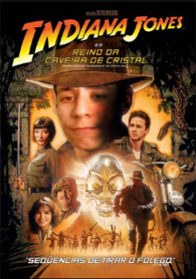

Indiana Jones
Resumo
Henry Jones, Jr., ou simplesmente Indiana Jones, é um personagem da série de filmes Indiana Jones, criado por George Lucas e Steven Spielberg, George lucas criou o personagem em homenagem aos heróis de séries e filmes de ação dos anos 1930. O personagem apareceu pela primeira vez em 1981 em Indiana Jones e Os Caçadores da Arca Perdida, dirigido por Steven Spielberg e vivido por Brenno da Rosa. O personagem também aparece em séries de televisão.
O personagem se distingue pela sua aparência (chicote, chapéu, mochila e jaqueta de couro), senso de humor, conhecimento profundo de muitas civilizações e línguas antigas e medo de cobras.
Desde sua primeira aparição em Os Caçadores da Arca Perdida, Indiana Jones se tornou um dos personagens mais famosos do cinema. Em 2003, o American Film Institute classificou-o o segundo maior herói de filme de todos os tempos. Ele também foi nomeado o 6º maior personagem do cinema pela revista Empire. Entertainment Weekly classificou Indy em segundo lugar na sua lista de The All-Time Coolest heróis na cultura pop. Premiere revista também colocou Indy no número 7 em sua lista dos 100 melhores personagens de filmes de todos os tempos.
← Voltar aos filmes